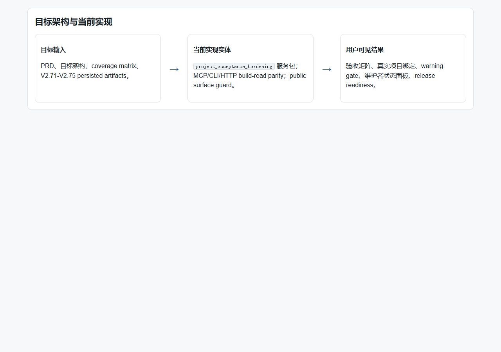
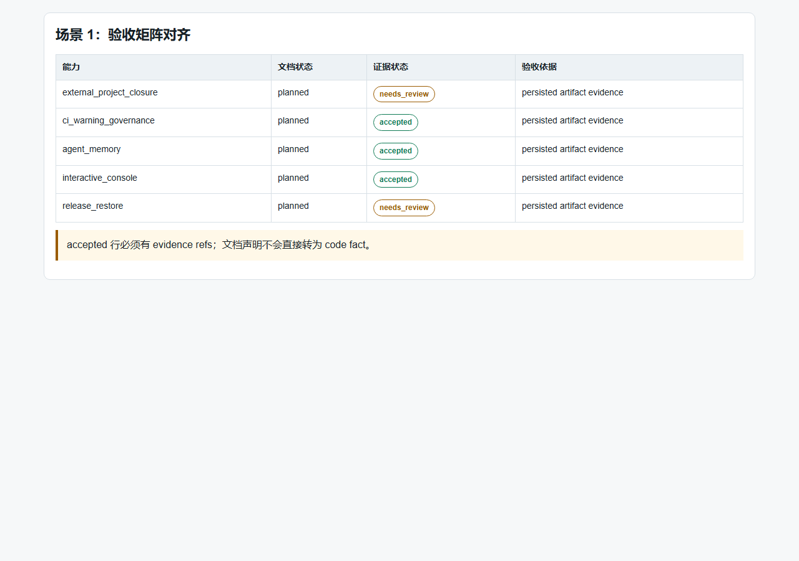
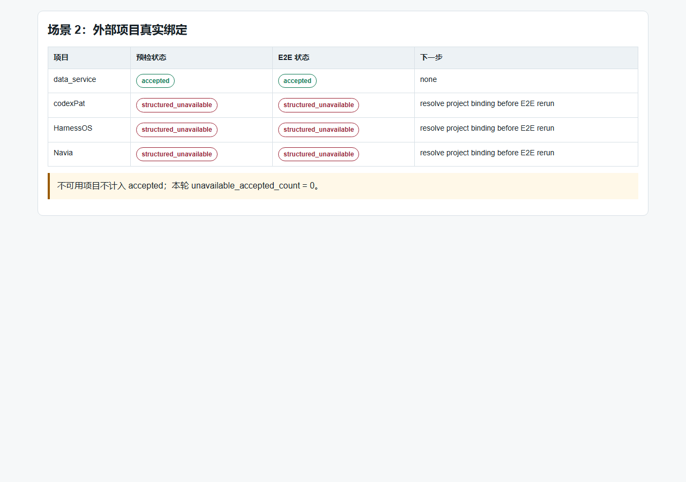
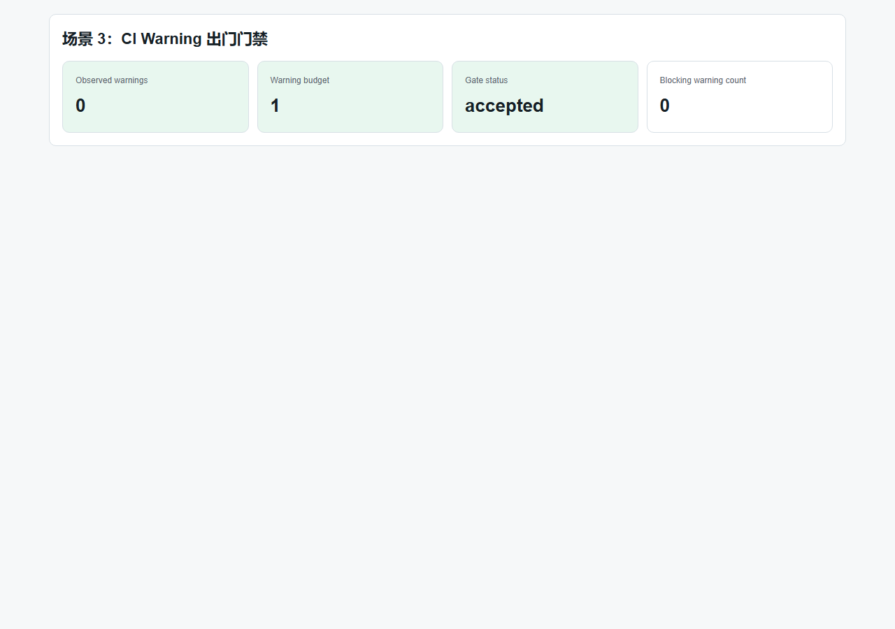
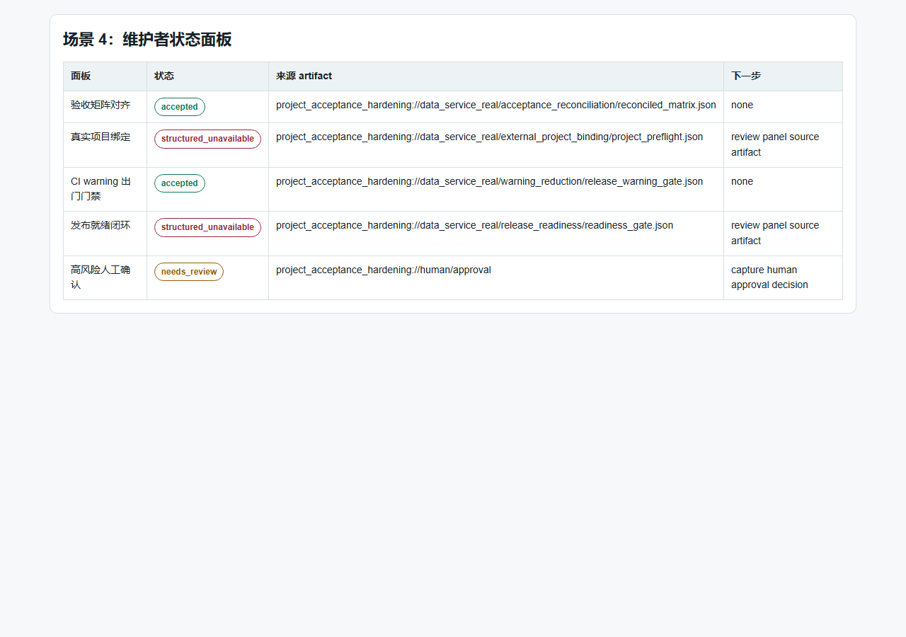
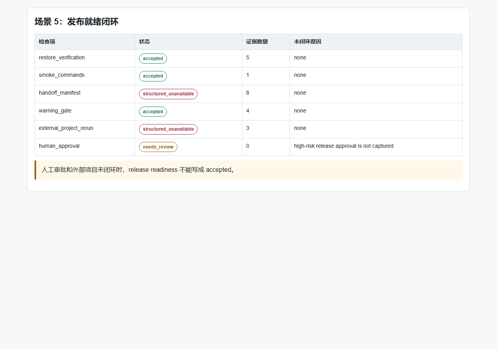
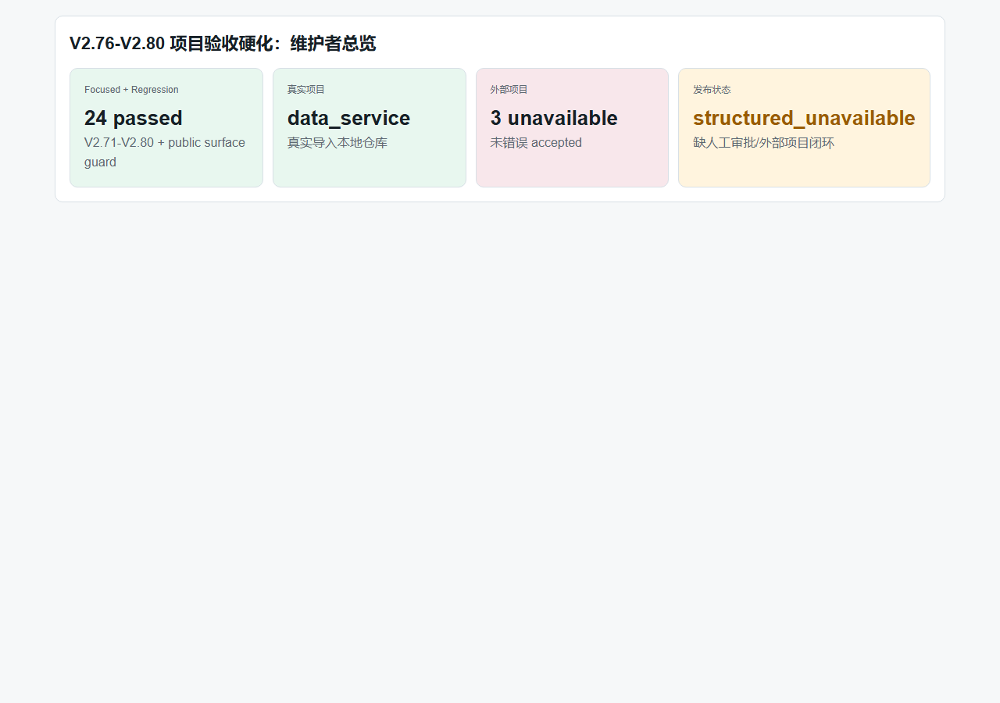

验收日期：2026-06-30。报告版本：v2，已补强为人类审计导向版本。
证据来源：原始 PRD/目标架构、本地代码、focused tests、真实 data_service E2E、Windows Chrome headless 截图、Git 提交记录。
边界声明：本报告不声称完整恢复复杂项目设计意图，不声称 full call graph、runtime topology、data/control flow 或 type inference；不把 documentation claim 当 code fact。
| 审计目标 | 应检查证据 | 通过标准 |
|---|---|---|
| 确认审计对象 | Commit `b2de815`，远端 `https://github.com/ljx418/data_service.git` | 本地 `HEAD...origin/main` 为 `0 0`。 |
| 确认规格来源 | `V2_76_80_PROJECT_ACCEPTANCE_HARDENING_PRD.md` 与 `...TARGET_ARCHITECTURE.md` | 五个阶段目标和代码实体一一对应。 |
| 确认实现完整性 | `backend/data_service/code_assets/project_acceptance_hardening/` | 五个服务模块、shared、persistence 均存在。 |
| 确认对外能力 | MCP / CLI / HTTP 注册和 public surface guard | 10 个 MCP tools、1 个 CLI command family、10 条 HTTP routes 被测试锁定。 |
| 确认没有虚假验收 | 真实 E2E summary、截图、false-green audit | 不可用和需人工审批状态不能被写成 accepted。 |
| 证据类型 | 路径或命令 | 状态 |
|---|---|---|
| 结构化证据索引 | docs/V2.x/V2_76_80_PROJECT_ACCEPTANCE_HARDENING_HUMAN_AUDIT_EVIDENCE_INDEX.json | accepted |
| 最终验收报告 | docs/V2.x/V2_76_80_PROJECT_ACCEPTANCE_HARDENING_FINAL_ACCEPTANCE_AUDIT_REPORT.md | accepted |
| 真实 E2E 本地产物 | workspace/v2_76_80_real_workspace/v2_76_80_real_e2e_summary.json | accepted，该目录被 gitignore，作为本地复核证据。 |
| 截图证据 | docs/V2.x/visual_acceptance_assets/v2_76_80/*.png | accepted，由 Windows Chrome headless 生成。 |
PYTHONPATH=.tmp/pytest-deps:backend python3 -m pytest -q \ backend/tests/test_v2_71_external_project_binding_closure.py \ backend/tests/test_v2_72_ci_warning_governance.py \ backend/tests/test_v2_73_agent_long_term_memory_productization.py \ backend/tests/test_v2_74_interactive_maintainer_console.py \ backend/tests/test_v2_75_release_restore_packaging.py \ backend/tests/test_v2_76_acceptance_matrix_reconciliation.py \ backend/tests/test_v2_77_external_project_real_binding.py \ backend/tests/test_v2_78_ci_warning_reduction.py \ backend/tests/test_v2_79_maintainer_console_productization.py \ backend/tests/test_v2_80_release_readiness_closure.py \ backend/tests/test_public_surface_guard.py Result: 24 passed, 15 warnings
PYTHONPATH=.tmp/pytest-deps:backend python3 -m compileall backend/data_service backend/app/api backend/tests Result: passed git diff --check Result: passed git diff -- backend/app/api/v1/data_service.py backend/data_service/service.py Result: no diff
PRD、目标架构、coverage matrix、phase gate、V2.71-V2.75 persisted artifacts。
project_acceptance_hardening 服务包；MCP/CLI/HTTP build-read parity；public surface guard。
验收矩阵、真实项目绑定、warning gate、维护者状态面板、release readiness。

| 目标架构实体 | 当前实现 | 验收状态 |
|---|---|---|
| Acceptance Matrix Reconciler | matrix_reconciliation.py，读取 persisted artifact，不用文档声明直接验收。 | accepted |
| External Project Real Binder | external_project_binding.py，真实路径预检与 E2E rerun 状态分离。 | accepted |
| CI Warning Gate | warning_reduction.py，warning 超预算会阻断 release gate。 | accepted |
| Maintainer Console Product Model | console_productization.py，聚合状态面板并保留 non-accepted 状态。 | accepted |
| Release Readiness Closure | release_readiness.py，聚合机器检查与人工审批。 | structured_unavailable |
| Surface | 新增内容 | 测试证据 |
|---|---|---|
| MCP | 10 个 `knowledge_code_project_acceptance_hardening_*` build/read tools。 | test_public_surface_guard.py |
| CLI | python -m data_service code project-acceptance-hardening ... | test_public_surface_guard.py |
| HTTP | 5 组 build/read routes：matrix、external-binding、warning-reduction、console-product、release-readiness。 | test_public_surface_guard.py |
| Protected legacy files | backend/app/api/v1/data_service.py、backend/data_service/service.py | 无 diff。 |
| PRD 目标 | 实现证据 | 测试证据 | 结论 |
|---|---|---|---|
| 维护者看到文档矩阵、验收报告和真实 artifact 状态一致。 | matrix_reconciliation.py | test_v2_76_acceptance_matrix_reconciliation.py | accepted |
| 维护者配置外部项目真实路径并执行 preflight/E2E rerun。 | external_project_binding.py | test_v2_77_external_project_real_binding.py | accepted，外部项目不可用状态保留。 |
| 维护者看到 warning owner、削减计划、预算变化和 release gate。 | warning_reduction.py | test_v2_78_ci_warning_reduction.py | accepted |
| 维护者在统一控制台理解状态、风险、下一步和证据跳转。 | console_productization.py | test_v2_79_maintainer_console_productization.py | accepted |
| 维护者基于 restore verification、smoke records 和出门条件判断是否发布。 | release_readiness.py | test_v2_80_release_readiness_closure.py | structured_unavailable，未人工审批时不放行。 |






| 风险 | 观测结果 | 审计结论 |
|---|---|---|
| 文档声明当作代码事实 | 矩阵行使用 persisted artifact evidence。 | accepted |
| 外部项目 unavailable 被写成 accepted | `structured_unavailable_count = 3`，`unavailable_accepted_count = 0`。 | accepted |
| 缺人工审批却发布 accepted | human approval 仍为 `needs_review`。 | accepted |
| warning 被隐藏 | warning gate 有 focused test 覆盖超预算阻断路径。 | accepted |
| 截图证据虚假 | 截图由 Windows Chrome headless 对真实 E2E 场景页生成。 | accepted |
| 目标架构文档边界声明密度 | PRD、pre-audit、drawio、final audit 已声明；target architecture 未重复完整列出。 | needs_review，非阻塞但建议后续补齐。 |
| 检查项 | 预期结果 | 本报告证据 |
|---|---|---|
| 报告是否提供可复执行命令？ | 是。 | 第 4 节。 |
| 报告是否说明 commit 和远端？ | 是。 | 第 3 节。 |
| 报告是否列出实现代码实体？ | 是。 | 第 5 节。 |
| 报告是否列出 public surface？ | 是。 | 第 6 节。 |
| 报告是否能证明截图非空？ | 是，截图文件在仓内；尺寸为 1280x900。 | 第 8 节和资产目录。 |
| 报告是否明确未完成事项？ | 是，外部项目路径和人工审批未闭环。 | 第 1、8、9、11 节。 |
| 报告是否允许人类复核全部阶段目标？ | 是，按 PRD 目标、实现、测试、截图、E2E 状态逐项映射。 | 第 7 节。 |
| 剩余风险 | 当前状态 | 下一步 |
|---|---|---|
| 外部项目真实路径 | structured_unavailable | 提供 `codexPat`、`HarnessOS`、`Navia` 可读 repo path 后 rerun V2.77/V2.80。 |
| 高风险人工审批 | needs_review | 由人类维护者记录 release approval evidence。 |
| 目标架构边界声明密度 | needs_review | 后续可在 target architecture 中重复列出 full-call-graph 等禁止声明。 |
| 旧依赖 warnings | needs_review | 不阻断本阶段，但应保留在 warning governance 后续计划中。 |
本报告 v1 因缺少 commit、命令、public surface 明细、代码实体映射和人工复核清单，被打回补强。v2 已补齐这些缺口，并新增结构化 evidence index。
阶段性结论：V2.76-V2.80 项目验收硬化能力在当前本地 data_service 真实项目范围内通过代码检视、文档审计、功能检查、focused tests、真实 E2E 和 headless 可视化截图验收。
出门边界：最终 release 仍不能 accepted；外部项目真实路径和人工审批必须继续保持可见 blocker / needs_review。